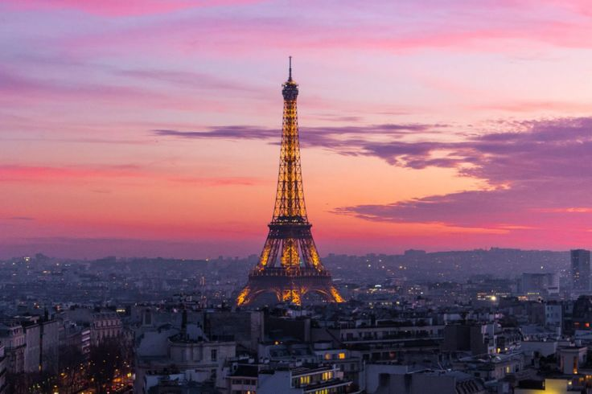

London
London, the capital of England, is the largest city in the United Kingdom, with a metro area exceeding 13 million residents.
Situated along the River Thames, London has been a significant settlement for over two thousand years, dating back to its Roman roots as Londinium.
Paris

Paris, the capital of France, is celebrated for its art, fashion, and rich culture. It hosts famous sites such as the Eiffel Tower and the Louvre Museum.
Tokyo

Tokyo, Japan’s bustling capital, is renowned for its skyscrapers, shopping districts, and dynamic culture, blending modernity with deep-rooted traditions.